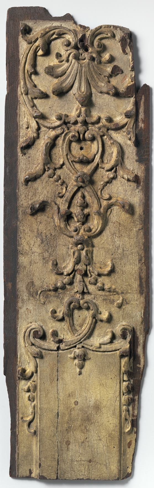
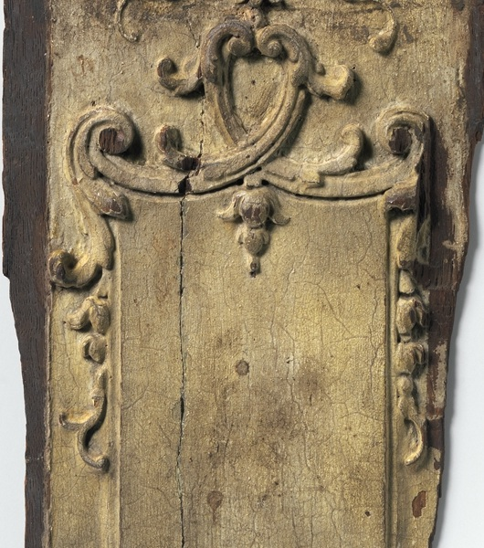

A linecontinues.
The carved drop and dark mark below nearly align. The crack begins to their left and runs down beside them.
13.0 x 41.0 cm
Met object 189512

At the panel's top, a small carved drop hangs near the center. The crack starts left of it and runs down beside it. A dark round mark lower down nearly aligns with the drop. I first let the crack stand for the line; close looking gives me two paths.

Follow the line.
- Start at the small carved drop.
- Follow it to the panel's upper edge.
- Look left for the split.
- Follow the split downward.
- Return to the dark mark nearer the center.
The record stops short.
The Met calls this a French pilaster fragment, dates it to the early eighteenth century, and records painted wood measuring 13 by 41 centimetres. The record gives no further description of the panel or its marks.
I do not know whether the lower field was meant to stay plain, or what made the split and dark marks. The viewing score follows what remains visible.
The Metropolitan Museum of Art, object 189512 / Open Access image, public domain.